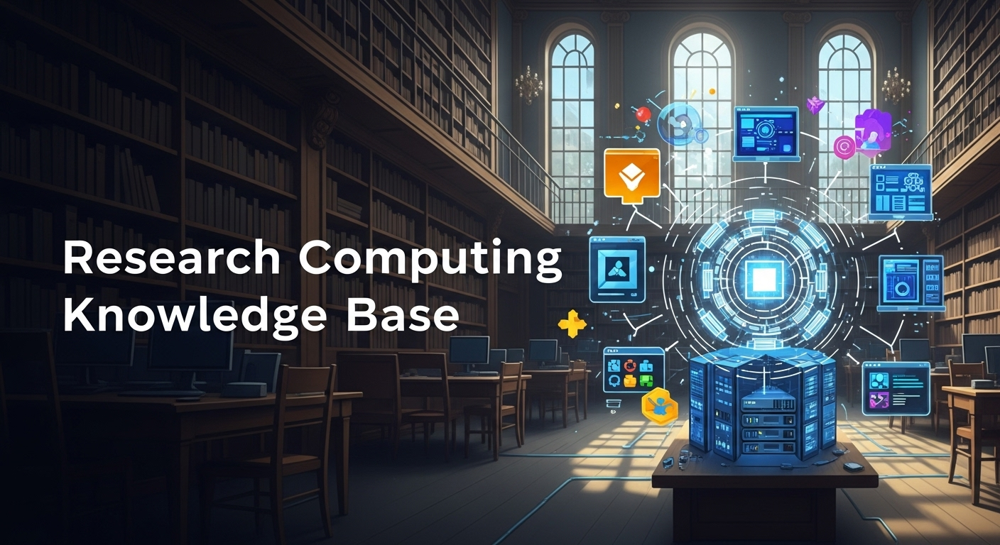

---
id: knowledge-base
title: Knowledge Base
sidebar_label: Knowledge Base
---

Welcome to the UCR Research Computing Knowledge Base! This resource hub provides practical guides, how-to articles, and technical information to help you effectively utilize UCR's research computing resources. Use the categories below or the search bar above to find the information you need.
Official Service Guides (KB Series)
[KB001: Research Data Storage Strategy](KB001_Research_Data_Storage_Strategy.md)
[KB001: AI Cloud Access Request](KB001_AI_Cloud_Access_Request.md)
[KB002: Project Activation Welcome](KB002_Project_Activation_Welcome.md)
[KB003: Overleaf Account Error](KB003_Overleaf_Account_Error.md)
[KB004: HPCC Account Creation](KB004_HPCC_Account_Creation.md)
[KB005: Ursa Major Service Tiers](KB005_Ursa_Major_Service_Tiers.md)
[KB006: Migrating Compute to HPCC](KB006_Migrating_Compute_to_HPCC.md)
[KB006: SOM Clinical Apps](KB006_SOM_Clinical_Apps.md)
[KB007: Migrating Data to Archive](KB007_Migrating_Data_to_Archive.md)
[KB007: Tier 2 Recharge Workflow](KB007_Tier2_Recharge_Workflow.md)
[KB008: Using NAIRR Pilot](KB008_Using_NAIRR_Pilot.md)
[KB009: Using NSF ACCESS](KB009_Using_NSF_ACCESS.md)
[KB010: Resource Catalog](KB010_Resource_Catalog.md)
[KB011: Access Identity](KB011_Access_Identity.md)
[KB013: CephRDS Onboarding & Access Guide](KB013_CephRDS_Onboarding.md)
[KB014: UCR Secure Research Enclave Guide](KB014_Secure_Enclave_Guide.md)
[KB015: Secure Enclave Project Onboarding Checklist](KB015_Secure_Enclave_Onboarding_Checklist.md)
[KB016: Secure Enclave Data Ingress Protocol](KB016_Secure_Enclave_Data_Ingress.md)
[KB017: Troubleshooting Overleaf Professional Access](KB017_Overleaf_Troubleshooting.md)
[KB018: Accessing CephRDS with Python (boto3)](KB018_CephRDS_Python_boto3.md)
[KB019: Accessing CephRDS via Graphical S3 Clients](KB019_CephRDS_GUI_Clients.md)
[KB020: Mounting CephRDS Buckets as Local Drives](KB020_CephRDS_Mounting_Folders.md)
Getting Started
[Introduction to Research Computing at UCR](intro-research-computing-guide.md) - A beginner's guide covering concepts, HPC, cloud, data management, and AI/ML.
[About Research Computing at UCR](../pages/about.md) - Mission, vision, strategy, projects (Ursa Major, RCSAS), grants, and team information.
Computing Resources
High-Performance Computing (HPC)
[What is HPC?](What_is_HPC.md) - Definition and uses of High-Performance Computing.
[BLAST Searches on the HPCC Cluster](blast.md) - Guide to running BLAST, covering access, partitions, job submission, and optimization.
[Launching and Managing HPC Clusters](How_To_Launch_a_Ursa_Major_Cluster.md) - Links to guides for launching Ursa Major (GCP) HPC clusters.
[Launching Custom Ursa Major Cluster](Launch_Custom_Ursa_Major_Cluster.md) - Links to UCR-specific custom blueprints and Slurm job examples for Ursa Major.
[HPC Job Scheduling (Slurm)](how_to_connect_to_hpc_cluster_run_sample_job.md) - Connecting to GCP HPC clusters and using basic Slurm commands.
[Ursa Major HPC Clusters](Ursa_Major_HPC_Clusters.md) - Overview of UCR's Google Cloud-based, customizable, and scalable HPC service.
[HPCC](../pages/HPCC.md) - Information on UCR's on-premise High-Performance Computing Center resources, access, and guidelines.
[Building an HPC Cluster](../pages/Building_an_HPC_Cluster.md) - Technical guide on building HPC clusters with Warewulf, Slurm, and modern tools.
[Comprehensive Guide to Warewulf HPC Cluster Deployment](../pages/Comprehensive_Guide_to_Warewulf_HPC_Cluster_Deploy.md) - In-depth guide to Warewulf 4.x, Slurm, and MUNGE deployment.
[Building R1 AAU Research Cluster](R1_AAU_Research_HPC_Cluster.md) - Proposal for an AI HPC cluster, comparing with other R1 university resources.
[Open Science Grid](../pages/open_science_grid.md) - Overview of OSG, its benefits, technologies, and getting started.
[Submit Job to OSG](submit-job-to-osg.md) - Guide to submitting HTCondor jobs to the Open Science Grid.
[How to Log Into SDSC Comet and Run a Test Job](how-to-log-into-sdsc-comet-and-run-a-test-job.md) - Detailed steps for accessing SDSC Comet and submitting a sample job.
Cloud Computing
[Cloud Computing Overview](../pages/computing-resources-overview.md) - Summary of UCR's computing resources including HPC, cloud, and national platforms.
[GCP and AWS Cloud Credits](../pages/GCP_and_AWS_Cloud_Credits.md) - Information on obtaining and using GCP/AWS cloud credits for research.
[GCP Subscription Agreements](../pages/gcp_subscription_agreements.md) - Details on GCP subscription agreements for UCR.
[Mounting Google Cloud Storage](how_to_mount_google_cloud_storage.md) - Guide to mounting GCS buckets on Linux using Rclone.
[GCS and AWS S3](../pages/gcs_aws_s3.md) - Overview of GCS and AWS S3 storage solutions and their features under UCR's EDP.
[Google Drive](../pages/Google_Drive.md) - Information on UCR Google Drive usage, quotas, and best practices for collaborative files.
[Creating a Budget for a Ursa Major/Cloud Project](Ursa_Major_Project_Budget_Creation.md) - Guide to setting up GCP budgets with discounts and alerts.
[Globus Transfer](Globus_Transfer.md) - How to use Globus Personal Connect for data transfers between HPCC and external centers.
[Running Genomics Nextflow Pipelines](gnextnext5.md) - Guide to using Nextflow on UCR HPCC for genomics.
[Genomics 101](genomics101.html) - Fundamental concepts and tools in genomics research.
GCP Scaling and Strategy
[UCR Research & GCP: Scaling for the Future](ucr-research-gcp-scaling.html) - An interactive report on the growing demand for GPU and TPU resources at UCR, highlighting key research projects and strategic opportunities with Google Cloud Platform.
AI/ML and Edge Computing
[AI/ML Overview](../pages/ai-ml.md) - UCR's AI/ML Hub, covering LLMs, chatbots, software tools, and models.
[AI-Optimized HPC Clusters](../pages/ai-hpc-cluster.md) - Whitepaper on designing and building AI-HPC clusters in 2025.
[Ursa Major Research Services for AI/ML](Ursa_Major_Research_Services.md) - Overview of AI/ML services available through UCR's Ursa Major (GCP).
[LLM Inference Settings](llm-inference-settings.md) - Explanation of common inference parameters (Seed, Temperature, Top P/K, etc.).
[Using Gemini for Genomics Research at UCR](../gemini_genomics_researchers.html) - Guide on leveraging Google Gemini in genomics, with examples and ethical considerations.
[The Edge AI Revolution](../pages/Edge_AI_Revolution.md) - Whitepaper on Edge Computing, AI at the Edge, hardware, software, and challenges.
[Building AI-Optimized High-Performance Computing](../pages/Building_AI-Optimized_High-Performance_Computin.md) - Technical guide to AI-HPC cluster architecture and components for 2025.
[Gemini for Physics Researchers](Gemini_for_Physics_Researchers.md) - Guide on using Google Gemini in physics research, with applications and practical tips.
[Reinforcement Learning for Genomics on an HPC Cluster](reinforcement_learning_for_genomics.md) - A summary of setting up a reinforcement learning environment for a genomics task on a Slurm-based HPC cluster.
[AlphaFold on Slurm with Google Cloud Filestore](AlphaFold_Slurm_Filestore_Guide.md) - A guide to installing and running AlphaFold on a Slurm cluster using Google Cloud Filestore for shared data storage.
Other Computing Resources
[Ursa Major Research Workstations](Ursa_Major_Research_Workstations.md) - Overview of customizable, high-performance virtual workstations on Ursa Major (GCP).
[Connecting to a Ursa Major Research Workstation](Ursa_Major_Research_Workstations_How_to_Connect.md) - How-to guide for SSH, RDP, and gcloud connections.
[Launching a Ursa Major Research Workstation](Ursa_Major_Research_Workstations_How_to_Launch.md) - How-to guide for launching workstations via GCP Console or gcloud.
[Research Workstations](Research_Workstations.md)
[The Nautilus Cluster (Kubernetes)](The_Nautilus_Cluster.md)
[Nautilus](../pages/Nautilus.md) - Overview of the NRP Nautilus Kubernetes cluster, access, and documentation.
[Linux Manual](Linux_Manual.md)
[Local Lab Storage](Local_Lab_Storage.md)
[On-Prem Facilities](../pages/on-prem-facilities.md) - Information on UCR's data centers and on-premise research computing infrastructure.
[Web-Based Research Tools](../pages/web-based-research-tools.md) - Listing of available web-based tools for research.
[Accessing SDSC Comet and Running a Test Job](sdsc-comet-connect.md) - Guide to connecting to SDSC Comet and running a sample Slurm job.
[Using Gemini for Genomics Research at UCR](gemini_genomics_researchers.html) - Guide on leveraging Google Gemini in genomics, with examples and ethical considerations.
[The Edge AI Revolution](../pages/Edge_AI_Revolution.md) - Whitepaper on Edge Computing, AI at the Edge, hardware, software, and challenges.
[Building AI-Optimized High-Performance Computing](../pages/Building_AI-Optimized_High-Performance_Computin.md) - Technical guide to AI-HPC cluster architecture and components for 2025.
[Gemini for Physics Researchers](Gemini_for_Physics_Researchers.md) - Guide on using Google Gemini in physics research, with applications and practical tips.
Interactive Simulations and Visualizations
[Astrophysics 101](astrophysics101.html) - Introductory concepts in astrophysics with interactive elements.
[Earth Carbon Model](earthcarbonmodel.html) - A simulation modeling carbon cycles on Earth.
[Earth Model](earthmodel.html) - An interactive model of Earth's systems.
[HPC Simulation Visualizer](hpc-sim.html) - A tool for visualizing HPC job queue and node status (hypothetical description).
[LoRaWAN IoT Visualization](lorawan_iot_viz.html) - Visualizing data from LoRaWAN IoT devices.
[Solid-State Battery Charging Simulation](solid_state_battery_sim.html) - An interactive p5.js animation demonstrating electron flow during battery charging with different material properties.
[Interactive Battery Sketch](battery_sketch.html) - A p5.js visualization of battery charging dynamics, allowing material and voltage adjustments.
[Interactive Guide: Distributed PyTorch with Kubeflow Trainer](interactive_guide_distributed_pytorch_with_kubeflow_trainer.html) - An interactive guide to the official Kubeflow Trainer integration in PyTorch.
[How-To: Distributed PyTorch Training with Kubeflow Trainer](how-to-distributed-pytorch-training-with-kubeflow-trainer.md) - A step-by-step guide to distributed PyTorch training with the Kubeflow Trainer.
Other Computing Resources
[Storage Overview](../pages/storage-overview.md) - Comprehensive guide to UCR's data storage solutions, specs, costs, and upcoming Ceph RDS.
[Ursa Major Secure Research Storage](Ursa_Major_Secure_Research_Storage.md)
[Ursa Major Research Storage](Ursa_Major_Research_Storage.md) - Benefits of Ursa Major (GCP) cloud storage for research data.
[How to: Create a Ursa Major Research Storage Bucket](Ursa_Major_Research_Storage_How_to_Create_Bucket.md) - Guide to creating GCP GCS buckets.
[How to: Access a Ursa Major Research Storage Bucket](Ursa_Major_Research_Storage_How_to_Access_Bucket.md) - Guide to accessing and managing files in GCS buckets.
[S3 Auto Migrate and Delete](how-to-s3-auto-migrate-delete.md) - Automating data deletion in AWS S3 with lifecycle policies.
[Ceph Secure Research Storage](../pages/ceph_secure_research_storage.md) - Information on UCR's Ceph-based solution (Ceph RDS) for secure research data.
[Dryad](../pages/dryad.md) - Using the Dryad repository for publishing and archiving research data.
[Ursa Major Data](../pages/ursa_major_data.md) - Overview of data storage and analysis solutions within UCR's Ursa Major (GCP) environment.
Software and Tools
[Research Software on Ursa Major Cluster](https://spack.readthedocs.io/en/latest/package_list.html) - Comprehensive list of software installable via Spack.
[Installing R JAGS on Ursa Major](R-JAGS.md) - Guide to installing and testing r-rjags using Spack.
[Molecular Dynamics Simulation Input Files with ChatGPT](md_simulation_input_files_chatpgt.md) - Examples of using ChatGPT to generate MD simulation inputs.
[UCR Research Computing Github Org](https://github.com/UCR-Research-Computing) - Access UCR-RC projects, scripts, and documentation.
[Offline LLMs (Ollama)](ollama-how-to.md) - How to run open-source LLMs on UCR GPU workstations using Ollama.
[UCR Computational Chemistry Software Optimization Report](ucr_comp_chem_report.html) - An interactive report detailing the assessment of computational chemistry software, HPC performance, licensing, and recommendations for UCR's software stack.
[Computational Chemistry Software Stack Infographic](Computational_Chemistry_Software_Stack_Infographic.html) - An interactive infographic detailing the assessment of computational chemistry software, HPC performance, licensing, and recommendations for UCR's software stack.
[Software and Application Support](../pages/software_and_application_support.md) - Overview of supported software categories at UCR Research Computing.
Research Facilitation
[Research Facilitation Overview](../pages/research_facilitation.md) - Introduction to UCR's research computing consultation, training, and support services.
[Grant Colab](../pages/grant_colab.md) - Support for incorporating computing resources into grant proposals and finding opportunities.
[Ursa Major Ask](../pages/ursa-major-ask.md) - AI-powered tool to generate and execute research computing code and Slurm scripts.
Support and Training
[Lab Support](../pages/lab-support.md) - Tailored computing support for research labs, including infrastructure, software, and workflows.
[UCR Research Computing System Administration Service (RCSAS)](UCR_Research_Computing_System_Administration_Service.md)
[RCSAS MOU](https://docs.google.com/document/d/19nYYXakruAbg1pxKybpSddSz8p1TBiBc/edit?usp=sharing&ouid=115996119773834121624&rtpof=true&sd=true) - Memorandum of Understanding for the Research Computing System Administration Service.
[Resources](Resources.md) - Directory of UCR Research Computing resources, guides, and partner information.
[Online Courses](../pages/online_courses.md) - Curated list of online courses, tutorials, and videos for research computing, GCP, and ML.
[Workshops and Webinars](../pages/workshops_and_webinars.md) - Schedule of UCR Research Computing workshops, webinars, and office hours.
[Emerging Research Computing Trends at R1s](Emerging_Research_Computing_Trends_at_R1s.md) - Analysis of trends, challenges, and best practices at R1 universities.
Guidelines and Security
[Guidelines](../pages/guidelines.md) - Central UCR Research Computing guidelines on resources, data, support, security, and SLAs.
[Ursa Major Guideline](Ursa_Major_Guideline.md) - Detailed guidelines for UCR's Ursa Major (GCP) service.
[UCR Data Security Plans](UCR_Data_Security_Plans.md)
[Research Security](../pages/research_security.md) - UCR guidelines on data security plans, classification, and compliance (IS-3, NIST, CMMC).
[A Guide to the Safe and Secure Use of Artificial Intelligence in Research](AI-Safe-Secure-Research.md) - A comprehensive guide for UCR researchers on the approved use of AI models and infrastructure.
[Backup](../pages/backup.md) - Overview of UCR's data backup solutions including cloud archival and endpoint protection.
[Cost Models](../pages/cost_models.md) - Explanation of funding and cost models for UCR research computing resources.
[GCP, AWS, EDP](../pages/gcp_aws_edp.md) - Information on UCR's Enterprise Discount Programs for Google Cloud, AWS, and Azure.
[HPCC GPFS](../pages/hpcc_gpfs.md) - Information on the HPCC's General Parallel File System for high-speed storage.
[NSF Access](../pages/nsf_access.md) - Guide to the NSF ACCESS program for national cyberinfrastructure resources.
Best Practices
[Data Security in Research Computing](pages/research_security.md) - Guidelines for data security plans, classification, and compliance.
[Ursa Major Guideline](Ursa_Major_Guideline.md) - Detailed guidelines for UCR's Ursa Major (GCP) service, covering access, usage, data, and security.
[SSH to Access](ssh-to-access.md) - Basic information on using SSH for accessing resources.
[Building a Mature Research Computing Service](../pages/Building_a_Mature_Research_Computing_Service.md) - Strategies for developing comprehensive RC services at R1 universities.
[Research Infrastructure Support](../pages/research_infrastructure_support.md) - Overview of UCR's RCSAS for on-premise research systems.
[Containerization for Reproducible Research](Containerization_for_Reproducible_Research.html) - A tutorial on using Docker or Singularity to create reproducible computational environments for research projects.
[Infographic: Containerization for Reproducible Research](Infographic_Containerization_for_Reproducible_Research.html) - An infographic visually guiding UCR researchers on best practices for using containerization to achieve reproducible research.
[AI Audio Summary: Containerization for Reproducible Research](https://drive.google.com/file/d/1obmRkM0Fhq_Uhsv4IfF76QkJLzBnZqDq/view?usp=sharing) - An AI-generated audio summary of the containerization and reproducibility report. (MP3)
Grant Information
[Interactive Grant Funding Explorer](2025-grants.html) - An interactive dashboard to explore grant funding opportunities.
[UCR Strategy for NSF CSSI Grant](nsf-cssi-strategy.html) - UCR's strategic proposal for the NSF CSSI Grant, outlining three synergistic, high-impact options for a campus-wide cyberinfrastructure.* [KB013: CephRDS Onboarding & Access Guide](KB013_CephRDS_Onboarding.md) - Learn how to get an account, generate S3 keys, and connect to CephRDS.
[KB014: UCR Secure Research Enclave Guide](KB014_Secure_Enclave_Guide.md) - Overview, features, and cost structure for researchers.\n* [KB015: Secure Enclave Project Onboarding Checklist](KB015_Secure_Enclave_Onboarding_Checklist.md) - Internal checklist for provisioning a NIST 800-171 compliant project.
[KB016: Secure Enclave Data Ingress Protocol](KB016_Secure_Enclave_Data_Ingress.md) - Standard operating procedure for securely transferring federal data into the enclave.
[KB017: Troubleshooting Overleaf Professional Access](KB017_Overleaf_Troubleshooting.md) - How to resolve SSO entitlement errors for Overleaf Pro.